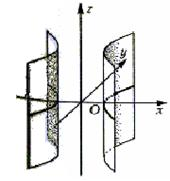

7.5.5.2.
Гиперболический цилиндр

Гиперболический цилиндр задается каноническим
уравнением:
Каноническое
уравнение гиперболического цилиндра
.
Осью цилиндра является координатная ось  , поперечные сечения – гиперболы.
Плоскости
, поперечные сечения – гиперболы.
Плоскости  и
и  являются
плоскостями зеркальной симметрии поверхности.
являются
плоскостями зеркальной симметрии поверхности.
, поперечные сечения – гиперболы.
Плоскости и являются
плоскостями зеркальной симметрии поверхности.